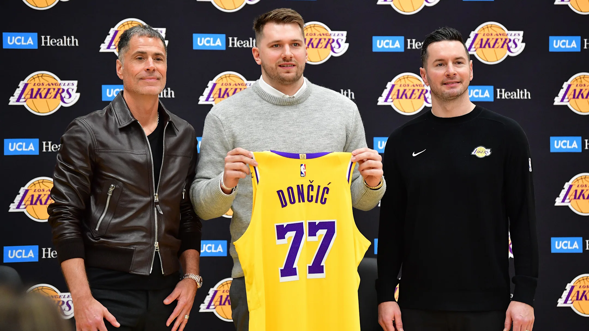

ESPN will officially air the potential debut of the newest Lakers superstar, Luka Dončić, on
Saturday.
ESPN PR annoucned via X.
The Lakers have yet to announce that Dončić will make his L.A. debut on Saturday, but ESPN is
certainly anticipating it to be against the Indiana Pacers this weekend.
Dončić has missed over a month of basketball due to a calf strain that has kept him out since
Christmas Day.
The 25-year-old was traded on Saturday night in one of the most stunning and shocking trades in
all
of the sport. The Dallas Mavericks traded Dončić for Lakers superstar center Anthony Davis, Max
Christie, and a 2029 first-round pick.
N.S.N !
ESPN Adjusts Schedule to Air Luka Doncic Lakers Debut

Feb 4, 2025; El Segundo, CA, USA; Los Angeles Lakers guard Luka Doncic
poses
for photos with general manager Rob Pelinka and head coach JJ Redick at UCLA Health Training Center.
Mandatory Credit: Gary A. Vasquez-Imagn Images / Gary A. Vasquez-Imagn Images
for photos with general manager Rob Pelinka and head coach JJ Redick at UCLA Health Training Center.
Mandatory Credit: Gary A. Vasquez-Imagn Images / Gary A. Vasquez-Imagn Images